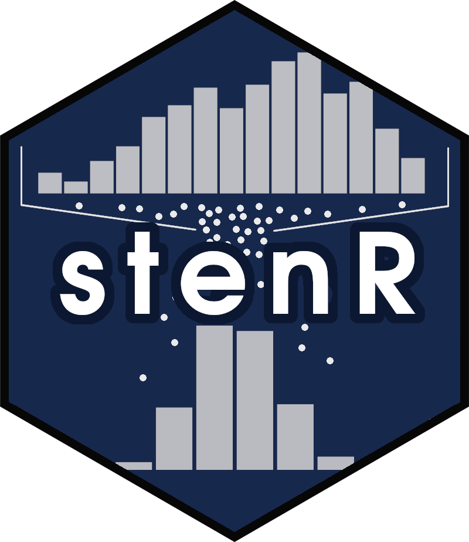

Import ScoringTable
import_ScoringTable.RdScoringTable can be imported from csv, json file or
tibble. Source file or object can be either an output of export_ScoringTable()
function, or created by hand - though it needs to be created following the
correct format.
Usage
import_ScoringTable(
source,
method = c("csv", "json", "object"),
cond_file,
conditions
)Arguments
- source
Path to the file to import the
ScoringTablefrom (for csv and json methods) orScoringTablein form ofdata.frame(for object method)- method
Method for import, either csv, json or object
- cond_file
File to import the
GroupConditionsfrom, if using csv method- conditions
GroupConditionobject or list of up to two of them. Mandatory for object method and csv method if nocond_fileis provided. If provided while using json method, originalGroupConditionswill be ignored.
Examples
# Scoring table to export / import #
Consc_ST <-
GroupedFrequencyTable(
data = IPIP_NEO_300,
conditions = GroupConditions("Sex", "M" ~ sex == "M", "F" ~ sex == "F"),
var = "C") |>
GroupedScoreTable(scale = STEN) |>
to_ScoringTable(min_raw = 60, max_raw = 300)
#> ℹ There are missing raw score values between minimum and maximum raw scores for
#> some groups. They have been filled automatically.
#> • M No. missing: 21/212; 9.91%
#> • F No. missing: 41/218; 18.81%
#> • .all No. missing: 24/219; 10.96%
#### Export/import method: csv ####
scoretable_csv <- tempfile(fileext = ".csv")
conditions_csv <- tempfile(fileext = ".csv")
export_ScoringTable(
table = Consc_ST,
out_file = scoretable_csv,
method = "csv",
cond_file = conditions_csv
)
## check if these are regular csv files
writeLines(head(readLines(scoretable_csv)))
#> "sten","M","F",".all"
#> 1,"60-145","60-152","60-148"
#> 2,"146-162","153-168","149-165"
#> 3,"163-180","169-186","166-183"
#> 4,"181-198","187-202","184-200"
#> 5,"199-214","203-219","201-216"
writeLines(head(readLines(conditions_csv)))
#> "category","group","conditions"
#> "Sex","M","sex == ""M"""
#> "Sex","F","sex == ""F"""
imported_from_csv <- import_ScoringTable(
source = scoretable_csv,
method = "csv",
cond_file = conditions_csv
)
all.equal(Consc_ST, imported_from_csv)
#> [1] TRUE
#### Export/import method: json ####
scoretable_json <- tempfile(fileext = ".json")
export_ScoringTable(
table = Consc_ST,
out_file = scoretable_json,
method = "json"
)
## check if this is regular json file
writeLines(head(readLines(scoretable_json)))
#> {"ScoringTable":[{"sten":1,"M":"60-145","F":"60-152",".all":"60-148"},{"sten":2,"M":"146-162","F":"153-168",".all":"149-165"},{"sten":3,"M":"163-180","F":"169-186",".all":"166-183"},{"sten":4,"M":"181-198","F":"187-202",".all":"184-200"},{"sten":5,"M":"199-214","F":"203-219",".all":"201-216"},{"sten":6,"M":"215-231","F":"220-235",".all":"217-233"},{"sten":7,"M":"232-247","F":"236-249",".all":"234-248"},{"sten":8,"M":"248-262","F":"250-262",".all":"249-262"},{"sten":9,"M":"263-274","F":"263-273",".all":"263-274"},{"sten":10,"M":"275-300","F":"274-300",".all":"275-300"}],"GroupConditions":{"Sex":{"M":["sex == \"M\""],"F":["sex == \"F\""]}}}
imported_from_json <- import_ScoringTable(
source = scoretable_json,
method = "json"
)
all.equal(Consc_ST, imported_from_json)
#> [1] TRUE